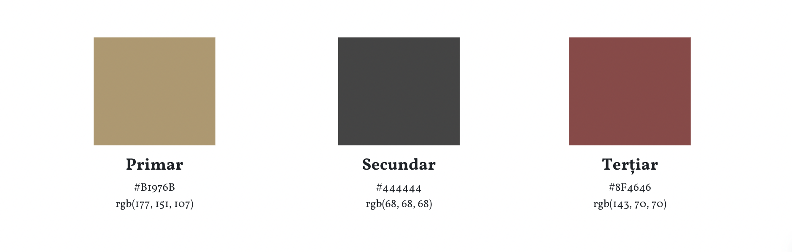
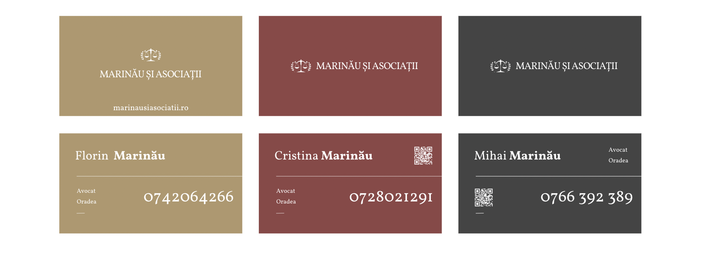

În lumea din ce în ce mai competitivă în care trăim, prezența digitală este esențială pentru succesul oricărei firme juridice.
Societatea de avocați Marinău și Asociații din Oradea, recunoscută pentru abordarea sa inovatoare și orientată spre client, a înțeles necesitatea unei transformări digitale pentru a-și consolida poziția pe piață și a apelat la serviciile SOLON prin achiziționarea abonamentului GOLD. Acest proiect ambițios de redesign digital include serviciile:
SOLON, agenția din Cluj-Napoca specializată în servicii digitale pentru avocați, a implementat o experiența digitală modernă și ușor de navigat, atat pentru avocatii colaboratori cat și pentru actualii și viitorii clienți.
Sari la 1. Strategie • 2. Implementare • 3. Rezultate • 4. Concluzie

Obiectivul principal al proiectului a fost dublu: să modernizeze imaginea de brand a societății de avocați și să îmbunătățească experiența online a clienților prin intermediul unui website intuitiv și informativ.
SOLON a propus o strategie integrată care să cuprindă:
Un brand juridic robust este ușor de folosit de colaboratori și consolidează imaginea societății în mediul juridic local și național. Așadar, SOLON a adoptat o abordare holistică, concentrându-se pe înțelegerea profundă a filosofiei clientului și a obiectivelor sale pe termen lung.
Ca corp de literă, am ales Vollkorn (designed by Friedrich Althausen) pentru eleganța lui distinctiva. Proporțiile bine echilibrate reflectă valoarea muncii în echipa, fundamentală pentru Societatea de avocați Marinău și Asociații din Oradea. Culorile reflectă experiența juridica de poeste 30 de ani a societății și nimic mai mult.
Logo-ul este adesea primul element vizual pe care clienții și potențialii clienți îl asociază cu marca juridica a societatii, ceea ce subliniază importanța unui design care comunică fiabilitate, profesionalism și expertiză.
În speță, logo este iconografic wordmark și este format din 2 elemente caracteristice: Balanța, care reprezintă simbolul clasic al justiției și echității în sistemul juridic și Frunzele de Laurus Nobilis, care sunt adesea asociate cu simbolurile de recunoaștere și onoare. De asemenea, am livrat o varianta deschisa și o varianta închise pentru a spori lizibilitatea, indiferent de fundal.
Reimaginarea creativă a unui brand existent poate fi un proces obositor, dar am implementat viziunea care reușește să transmită o imagine modernă, dar respectuoasă a tradiției. În final, am livrat în format .pdf un Manual de Brand cuprinzător și modern, dar în același timp scurt și elegant.
Manualul de Brand al Societății de avocați Marinău și Asociații din Oradea poate fi descarcat de aici.
Designul noilor cărți de vizită a fost implementat într-o gama variată de culori, gata de orice ocazie.
Cărțile de vizită au influențat pozitiv percepția publică, consolidand identitatea de brand pe plan local și facilitand comunicarea cu clienții noi. Totodată, odată oferite angajaților și colaboratorilor, cărțile de vizita personalizate reinnoiesc mândria de apartenență la firmă și stimulează angajamentul față de valorile și obiectivele acesteia.
Societatea de avocați Marinău și Asociații avea deja un website încă din 2008, dar timpul a trecut peste el și a imbatranit - așa ca am creat un website nou, modern și optimizat pentru mobil și motoarele de căutare. Unii ar spune ca e doar un website de prezentare, dar e mai mult de atat: e un portal în lumea serviciilor juridice de calitate oferite de clientul nostru iar design-ul respectă și încununează notorietatea brandului Societății de avocați Marinău și Asociații.
Din punct de vedere tehnic, website-ul este construit folosind platforma Wordpress cu tema Attorna și cateva plugins populare pentru formulare, SEO, performanța web și securitate. Echipa SOLON a ales un design modern si comprehensibil pentru a facilita accesul la informații și a îmbunătăți conversia vizitatorilor în clienți.
Păstrând stilul elegant, am implementat un loading screen (ecran de încărcare) prietenos pentru utilizatori, dar care în același timp crește performanța website-ului în ochii motoarelor de căutare micsorand timpul pentru First Contentful Paint (FCP).
În total, website-ul are în alcatuirea să 11 pagini web în care este prezentată practica juridică a Societății de avocați Marinău și Asociații și domeniile de activitate în care profeseaza. Ultima pagină este cea de contact unde am plasat informații esentiale de corespondență și un formular pentru contact rapid care trimite mesajele clientilor pe email, direct în Inbox-ul principal al clientului.
Implementarea unei strategii SEO (Search Engine Optimization) pentru website aduce numeroase beneficii care pot îmbunătăți vizibilitatea generala online și pentru atrage potențiali noi clienți. Pentru a îmbunătăți ranking-ul în rezultatele motoarelor de căutare am respectat principii fundamentale SEO în implementarea website-ului și am optimizat prezenta firmei pe Google MyBusiness. Comparativ cu alte forme de publicitate plătită, SEO este o strategie foarte eficientă din punct de vedere al costurilor pe termen lung. Odată ce website-ul ajunge în topul rezultatelor, costurile asociate cu menținerea acestei poziții sunt adesea mai reduse decât costurile publicității plătite.
Reacția clientului la noul design și strategia digitală implementată a fost excepțională. Societatea de avocați Marinău și Asociații a raportat o creștere semnificativă în vizibilitatea online, cu o îmbunătățire de 60% a traficului pe website în primele 30 de zile post-lansare. Feedback-ul primit de la clienții existenți și potențiali a fost extrem de pozitiv, evidențiind ușurința de navigare pe site și claritatea informațiilor prezentate.

În domeniul avocaturii, prezența online și imaginea sunt importante pentru a valida încrederea clientilor. Colaborarea cu echipa Solon ne-a ajutat să ne extindem vizibilitatea în mediul online prin site-ul web pe care l-am conceput impreuna cu acestia. Cu ajutorul echipei Solon, avem acum un site modern care reflectă profesionalism, care ne reprezintă identitatea și ne sporeste prezența online. Experiența de lucru cu Solon a fost eficienta, echipa lor fiind profesionistă, creativă și orientată către rezultate. Recomand cu încredere serviciile Solon pentru dezvoltarea prezenței digitale și pentru consolidarea brand-ului.
Această inițiativă a reprezentat o tranziție esențială către o practică juridică modernă, adaptată la cerințele unei lumi digitale în continuă schimbare.
Proiectul de re-design realizat de SOLON pentru Societatea de avocați Marinău și Asociații din Oradea demonstrează puterea transformării digitale în domeniul juridic. Prin colaborarea strânsă cu clientul și adoptarea unei abordări bazate inovație, SOLON a reușit să creeze o prezență digitală care nu doar că reflectă valorile și profesionalismul avocatului, dar și îmbunătățește semnificativ angajamentul și satisfacția clienților. Acest studiu de caz subliniază angajamentul SOLON de a oferi soluții digitale de înaltă calitate care generează rezultate măsurabile și susțin creșterea sustenabilă în domeniul online juridic.
SOLON oferă servicii digitale complete care îmbină creativitatea tehnologiei cu rigorile legii.
Website Development
Mobile App Development
API Development
Integrări Personalizate
Audit de securitate
Search Engine Optimization (SEO)
Optimizare Google MyBusiness
Social Media Management
Copywriting
Recomandări unelte digitale
Digitalizare procese business
Instalare hardware & software
Ședințe lunare, Q&A
Un coleg din departamentul tehnic va iniția o discuție telefonică în viitorul apropiat.